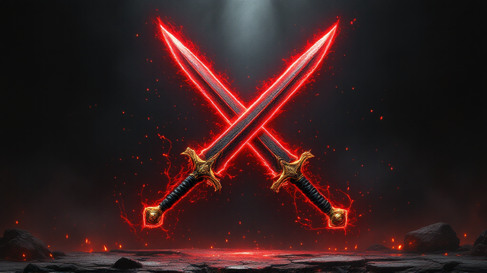
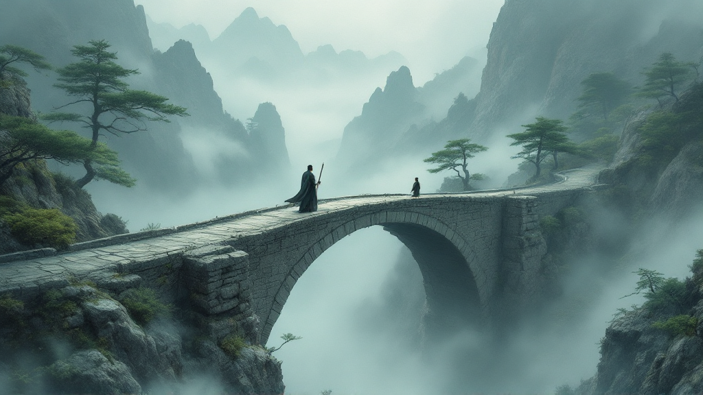

壱
Jidori
Crimson Dragons School
One of Kanton's brightest warriors. He can see the land's dark future clearly — and he must convince his brother that the stories they once mocked are warnings, not myths.
A Dark Fantasy of Kanton
Only the Crimson Swords — twin blades said to sever immortality itself — can end him. Two brothers carry them. Only one legend can be true.
The Story
When rumors stir that Khelle, the blood-bound Demon Lord long dismissed as a bedtime tale, has clawed his way back to the living, the once-peaceful land of Kanton braces for ruin.
At the revered Crimson Dragons School, brothers Jidori and Rane are Kanton's brightest warriors, yet even they question whether the demon is real — until ominous signs begin to unfold before their eyes.
The only hope of stopping Khelle lies in the twin Crimson Swords, mythical blades said to sever immortality itself. But legends are stubbornly silent about where — or even if — the swords still exist.
As war drums echo across the land and nightmarish apparitions stalk the streets, the brothers face a stark truth: some ghost stories are meant to be believed, because the monsters in them are real.
The Land
Mountain schools where the old disciplines are still kept. A prophecy carved into a hundred generations. A name the elders only whisper. Kanton is a place where legend is not history — it is a countdown.
Those Who Carry the Legend
Crimson Dragons School
One of Kanton's brightest warriors. He can see the land's dark future clearly — and he must convince his brother that the stories they once mocked are warnings, not myths.
Crimson Dragons School
A warrior reeling from heartbreaking loss and the first sparks of unexpected love — doubting he has the strength for a quest that could cost everything.
The Blood-Bound Demon Lord
Long dismissed as a bedtime tale — until rumors stir that he has clawed his way back to the living, and the once-peaceful land of Kanton braces for ruin.
Descriptions are drawn straight from the book. Portraits are placeholders — character art we create together. art on wake
Moments from the Tale
Candidate scenes to render as artwork — the images that will carry the mood of the site. Final selections chosen with Emily.

IIThe twin Crimson Swords — mythical blades said to sever immortality itself.
IIIThe path of destiny — "there are days the path is narrow and long, seemingly impassable."These first scenes are how I pictured them from your words — the real magic is you telling me what's different from how you see them, and we'll remake them to match. your vision, next
The Author
Emily Steiger grew up in northern Virginia, where her love of storytelling and martial arts began early. She studied at George Mason University before stepping away to raise her second child, later completing both her Bachelor's and Master's degrees in English at Grand Canyon University.
Her passion for culture and folklore led her to explore Japan every couple of years, enriching her imagination with each visit. Today, she teaches elementary school, where story time is often the most magical part of the day. When she's not writing or sharing adventures with her three grown children, she's out exploring trails with her trio of energetic pups. The Crimson Swords is her debut novel, blending her lifelong love of kung fu, myth, and the unbreakable bond between brothers.